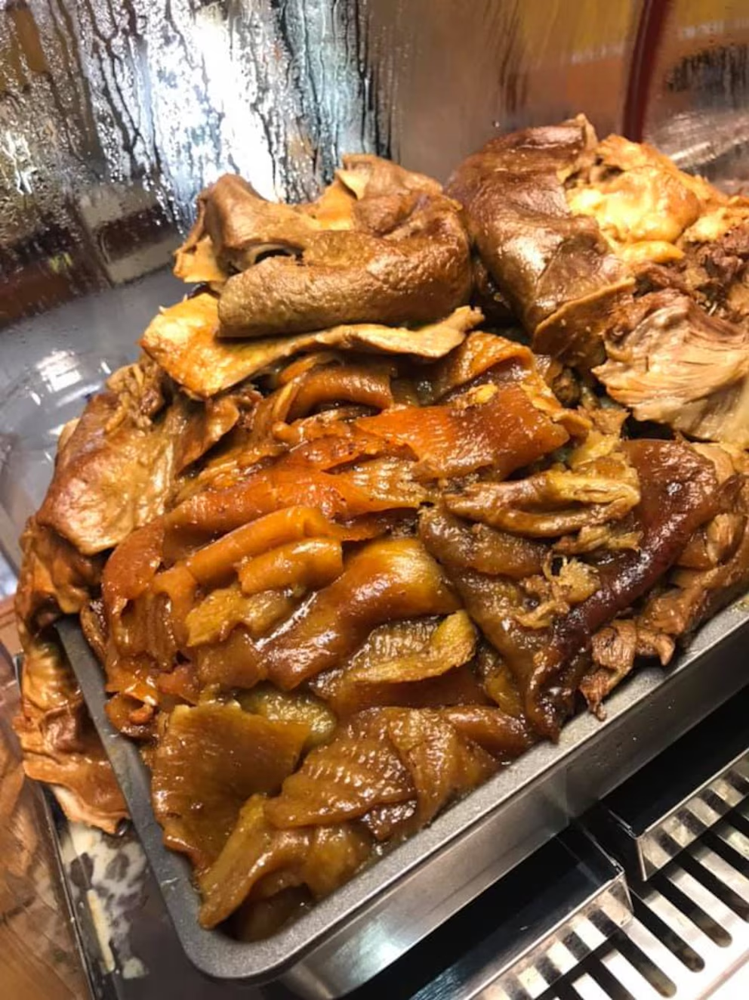

Esta es la receta de carnitas estilo Michoacán
Ingredientes:
Instrucciones:
Elegir las piezas: Puedes seleccionar las partes de cerdo que prefieras: costilla, costilla tierna (aldilla), buche, cuerito, cabeza, lomo y pierna. Lavar la carne: Lava muy bien la carne y sécala con cuidado. Coloca la carne en un bol y deja correr agua del grifo mientras la lavas. Luego, seca cada pieza con papel absorbente. Preparar los cueritos: Sumerge los cueritos en agua y resérvalos para que queden suaves. Calentar la cazuela: Calienta la cazuela. Aunque tradicionalmente se usa un cazo de cobre, puedes usar cualquier olla gruesa que distribuya el calor de manera uniforme. Si usas un cazo de cobre, asegúrate de curarlo y secarlo bien. Agregar la manteca: Vierte la manteca de cerdo y espera a que se disuelva, removiendo de vez en cuando. Déjala calentar un poco. Incorporar los gorditos: Agrega los gorditos, que ayudarán a darle color a las carnitas. A medida que se cocinan, el aceite tomará un color café oscuro. Sellar la carne: Coloca la carne en la cazuela para sellarla. Asegúrate de que el aceite esté caliente y usa pinzas o un tenedor con cuidado para evitar quemaduras. Agrega toda la carne excepto el cuerito. Agregar cebolla y ajo (opcional): Puedes añadir una cebolla entera y unos dientes de ajo pelados, aunque en esta receta tradicional se omiten. Voltear la carne: Gira la carne con frecuencia para que no se pegue al fondo de la cazuela y se cocine de manera uniforme. Cocción: Cocina durante 45 minutos a 1 hora. Verás que la carne cambia de color, aunque aún le faltará cocción. A medida que se cocina, adquirirá el característico color dorado de las carnitas michoacanas. Agregar los cueritos: Escurre bien los cueritos y agrégales al aceite para que se impregnen. Disolver la sal: Disuelve la sal en 1 taza de agua para que las carnitas queden jugosas y adquieran sabor de manera uniforme. Incorporar el agua salada: Vierte la mezcla lentamente en la cacerola, cuidando de no salpicar el aceite. Ingredientes opcionales: Si lo deseas, puedes añadir un ramillete de hierbas de olor (tomillo, mejorana y laurel), cáscara de naranja dulce, y jugo de naranja agria (o un zumo de naranja dulce y limón). Cocción final: Cocina por 45 minutos a 1 hora más. Retira la carne cuando esté dorada y parte del líquido se haya evaporado. Coca Cola (opcional): Si no agregaste los gorditos al principio, puedes usar Coca Cola para dorar las carnitas. Agrégala después de los primeros 20 minutos de esta segunda cocción. Servir: Sirve caliente las carnitas estilo Michoacán. Disfrútalas de diversas maneras, como en tacos con salsa verde, cebolla, cilantro y limon